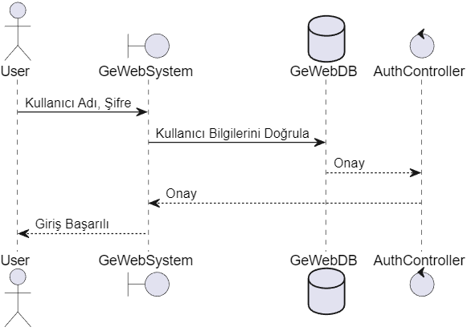

1. Giriş ve Hedefler

GeWeb (Güneş Enerji Web Sitesi) bir üniversite projesi olarak geliştirilmekte olan bir yazılım sistemidir. Kullanıcıların kendi bölgelerindeki güneş enerjisine ilişkin çeşitli bilgileri ve toplam güneş radyasyonu haritalarını görüntüleyebilmelerine yardımcı olmak amacıyla tasarlanmıştır.
Projenin amacı diğer şehirlerde kurulabilecek ve kullanılabilecek güneş enerji panelleri veya muhtelif güneşten enerji elde edilebilecek sistemlerin önceden alınan çeşitli bilgiler sayesinde verimliliğinin artmasıdır. Sistem, kullanıcıların Türkiye üzerinde farklı konumlardaki güneş enerjisi potansiyelini , ortalama yıllık toplam güneşlenme sürelerine göre ortalama yıllık toplam ışınım değerlerini kWh/m2 elde edebilmelerini sağlayacaktır. Kullanıcılar eklenen yerler hakkında incelemeler yapabilecekler.
Projenin ilk odak noktası kullanıcıları olup, enerji üretimi için yatırım yapabilecekleri potansiyel yerleri belirlemelerinde oldukça önemli fikirler kazanmalarını ve bilimsel veriler elde etmelerini sağlayacaktır.
1.1. Gereksinimlere Genel Bakış
GeWeb kullanıcıları şunları yapabilecektir:
- Çeşitli bölgelerdeki toplam güneş radyasyonu değerleri
- Çeşitli bölgelerin ,güneşten enerji üreten sistemleri kurmak için nasıl potansiyellere sahip olduklarını öğrenmek.
- Bölgelerin yıllık toplam güneşlenme sürelerine bağlı ortalama yıllık ışınım değerlerini kWh/m2 cinsinden elde etmek.
- GPT ağının sağladığı arama motoru sayesinde kullanıcıların aklına takılan sorular hakkında hızlıca bilgiler elde etmesini sağlamak.
1.2. Paydaşlar
| Rol/İsim | İlgili Şahıslar | Beklentiler |
|---|---|---|
Ürün Sahipleri |
İbrahim DEMİR , Batuhan BAYIR , Burak ERDEN, Nurettin Mutlu TÜVER |
Projenin hayata geçirilmesi ,yürütülmesi ,rehberlik edilmesi, çeşitli kısıtlamalar ve gereksinimler sağlayacaklar. |
Kullanıcılar |
————— |
Siteyi ziyaret ettiklerinde harita üzerinden seçilen bölgenin güneş enerjisi potansiyelini öğrenmek ve bu konudaki çeşitli sayısal verileri elde etmek. Bununla beraber GPT ağının sağladığı arama motoru sayesinde konuya dair çeşitli araştırmalar yapıp faydalı bilgiler elde edebilmek. |
2. Mimari Kısıtlamalar
Tüm mimari kısıtlamalar aşağıda yer almaktadır
2.1. Teknik Kısıtlamalar
| Kısıtlama | Açıklama |
|---|---|
Haritalar kullanıcıların tam kontrolü altında olmayacaktır. |
Uygulamanın ana odağı kullanıcıların bilgilendirilmesidir ancak haritalar bilimsel veriler içerdiği için yoruma ve müdahaleye kapalı olması geri. |
Pod kullanımı |
Kullanıcılar tarafından paylaşılan tüm bilgiler ,projeye göre ilgili kişisel bölmelerde saklanmalı ve bu bilgilerin gerçek sahipliğini garanti etmelidir. |
Web uygulaması |
GeWeb temel olarak web uygulamasıdır ve kullanıcıların uygulamayı kullanmasını ve erişilmesini kolaylaştırır. |
Genel yazılım çözümü |
Burada fikir ,yalnızca bir şehre özel bir çözüm değil, ihtiyaç duyulan herhangi bir şehirde veya bölgede uygulanabilecek genel bir çözüm geliştirmektir. |
GitHub |
Sürüm kontrolüne ilişkin bir havuzun kullanılması |
2.2. Organizasyonel Kısıtlamalar
| Kısıtlama | Açıklama |
|---|---|
Bütçe |
Takıma herhangi bir bütçe sağlanmıyor; dolayısıyla herhangi bir şey için ödeme yapılması gerekiyorsa bu, takım üyeleri tarafından yapılacaktır. |
Teslimat tarihleri |
Uygulamanın dağıtımından önce uygun şekilde takip edilmesi gereken her 3 haftada bir 4 teslimat vardır. |
2.3. Geleneksel Kısıtlamalar
| Kısıtlama | Açıklama |
|---|---|
ARC42 |
Dokümantasyon formatı ARC42 standartlarına uygun olmalıdır. |
Türkçe |
Projenin bu dilde gerçekleştirilmesi gerekiyor. |
3. Sistem ve Kapsam İçeriği
GeWeb , kullanıcıların incelemek istedikleri konumlardaki en önemli yenilenebilir enerji kaynaklarından biri olan güneş enerjisi hakkında oldukça faydalı haritalara ve çeşitli bilimsel verilere sahip olabileceği bir yazılım sistemidir. Haritalar seçilen bölgeye göre spesifik veriler içerecek ve paylaşılan kullanıcı konum bilgilerine göre kendisini geliştirip fazla kullanıcıya ait girişlerin olduğu bölgeler de harita üzerine eklenerek kullanıcılar bilgilendirilmiş olacak. Paylaşılan kullanıcı bilgileri projeye göre özel bir bölmede saklanıp güvenliği sağlanacak.
GeWeb , kayıt olan hemen her kullanıcının erişebileceği genel bir yazılım çözümüdür. Kullanıcıya odaklanır ve aynı zamanda bölgelerin fiziki bir haritasını kullanıcının ihtiyacı doğrultusunda bilgisine sunar.
3.1. İş Bağlamı
GeWeb yazılımı , kullanıcının POD’undaki bilgileri yönetir ve kullanıcılardan gelen konum bilgisine göre bölgeler hakkında kullanıcıya bilgilendirme sağlar.Bunu yapabilmek için görüntülencek bir haritaya ve kullanıcı bilgilerine ihtiyaç vardır.
Jenerik bir yazılım çözümü olduğundan bu gereksinimleri karşılamak için kullanıcıdan aldığı bilgilerle kullanıcıya daha iyi bilgiler sunmayı hedefler.
Öncelikle bir harita sağlayıcıya ihtiyaç var , çünkü GeWeb’in değişikliklere karşı esnek olmasını istiyoruz, böylece görüntülediği bölgeyi , sistemimiz tarafından depolanan tüm bu verilerle büyük bir veri tabanına ihtiyaç duymadan değiştirebiliriz. İkincisi, kimlik doğrulama ve veri işleme konusunda bize yardımcı olacak bir POD yöneticisi.Üçüncü ve son olarak da kullancının çeşitli sorularına yanıtlar bulabileceği bir arama motoru sağlaması için kullanışlı bir GPT ağı desteği.
İş bağlamının şeması (Business Context's Diagram)
Harici etki alanı arayüzleri :Harita için esas olarak iki kaynak kullanacağız:
- Google haritaları
- Inrup'un Solid React kütüphanesi
Kullanıcı verilerini yönetmek için Inrupt Javascript İstemci Kitaplıklarını (Solid React SDK - solid-ui-react) kullanan bir React kitaplığı.
| İletişim Ortaklığı | Girdiler | Çıktılar |
|---|---|---|
Coğrafi koordinatlar ve yakınlaştırma düzeyi |
Harita nesnesi |
|
solid-ui-react(Interrupt) |
podURL,oturum |
Veri kümeleri |
3.2. Teknik Bağlam
Express'i paket yöneticisi olarak kullanarak GeWeb’i bir React Uygulaması olarak geliştirmeye karar verdik.
Hedeflerden biri uygulamanın merkezi olmayan hale getirilmesidir. Bu, kullanıcının gizliliğini sağlamamıza yardımcı olacak POD'lar sayesinde yapılır.
Kullanıcılar, uygulamanın kendisi değil, kendi bilgilerine erişimin sahibi olan ve bu erişimi yöneten kişilerdir. Bunu gerçekleştirmek için her kullanıcı, gerekli bilgilerin çıkarıldığı bir Katı POD'un (Kişisel Çevrimiçi Veri Deposu) sahibi olacaktır.
3.3. Teknoloji Kararları
GeWeb’i esas olarak Express sunuculu bir React çerçevesinde uygulayacağız.React, podların kullanımına ve ayrıca tek sayfalık uygulamaların geliştirilmesine gerçekten uygun bir çerçevedir.
Javascript: Hiçbirimizin ne Javascript ne de Typescript konusunda deneyimi olmadığı için seçtiğimiz programlama dili Javascript'ti ve ilkinin öğrenme eğrisinin üstesinden gelmenin biraz daha kolay olabileceğini düşündük.
3.4. Temel Kalite Hedeflerine Nasıl Ulaşacağına İlişkin Kararlar
Uygulamanın haritalarıyla ilgili olarak Google Haritalar API'sini kullanıyoruz. Uygulamanın ihtiyaç duyabileceğimiz her lokasyonu ile ilgili bize güzel bir altyapı getiriyor.
Bölmelerle doğru bağlantıyı kurmak için ilgili API'leri kullanıyoruz.
3.5. İlgili Organizasyonel Kararlar
Sürüm kontrolüyle ilgili git iş akışının kullanılması. Bu şekilde, uygulamayı geliştirirken kodun sürümlendirilmesi ve güncellenmesi üzerinde büyük miktarda kontrole sahip olabiliriz.
Diğer geliştiriciler (yalnızca potansiyel kullanıcılar için değil) için anlaşılması kolay bir uygulama geliştirmek amacıyla proje belgelerinin sürekli olarak gözden geçirilmesi ve güncellenmesi.
Oturum açma, yönetimi veya kullanıcıların kendi profili gibi bölmelerle ilgili tüm olası eylemleri katı sağlayıcıya yüklenmiştir.
4. Çözüm stratejisi
GeWeb projesinin çözüm stratejisi, kullanıcıların güneş enerjisi potansiyeli verilerini keşfetmelerini sağlamak ve enerji üretimi için yatırım yapacakları potansiyel yerleri belirlemelerine yardımcı olmaktır. Bu amaca yönelik olarak, proje kullanıcı dostu bir arayüz ve güçlü bir veritabanı alt yapısı ile tasarlanmıştır.
5. Bina Blok Görünümü
Bina Blok Görünümü" (Building Block View), bir yazılım sisteminin temel bileşenlerini ve bu bileşenler arasındaki ilişkileri gösteren bir mimari görünümdür. Bu görünüm, sistemin bileşenlerini ve bu bileşenlerin nasıl bir araya geldiğini, birlikte çalıştığını açıklar. Bina blok görünümü, bir yazılım sisteminin yapı taşlarını ve bu taşların nasıl bir araya geldiğini anlamak için kullanılır.
5.1. BeyazKutu Genel Sistemi
Sistemin genel yapısı, kullanıcı arayüzü, veritabanı, kontrolörler ve harita işlemleri gibi ana bileşenleri içerir. Bu bileşenler, sistemdeki temel işlevselliği gerçekleştirmek için etkileşim içindedir.
5.1.1. SiyahKutu Genel Sistemi
Blackbox (Kara Kutu) görünümü, bir sistemin içerdiği işlevselliği açıklamak yerine, sistemle etkileşimde bulunan diğer unsurlarla olan ilişkileri vurgular. Bu görünümde, içte neler olduğu detaylı olarak belirtilmez; sadece sistemin dış dünyayla nasıl etkileşimde bulunduğu ve hangi hizmetleri sunduğu ön plandadır.
5.2. Level 2
Bu seviye, sistem içindeki temel bileşenlerin daha ayrıntılı bir görünümünü sunar. Örneğin, veritabanı yönetimi, harita işlemleri ve kullanıcı oturumu yönetimi gibi alt sistemlere daha fazla odaklanır.
5.3. Level 3
Seviye 3, seviye 2'deki bileşenleri daha da ayrıntılı bir şekilde inceler. Örneğin, harita işlemleri içindeki özel eleman eklemeleri (lokasyon vb.) veya güvenlik önlemleri gibi spesifik alt görevlere odaklanır.
6. Çalışma Zamanı Görünümü
Çalışma Zamanı Görünümü, bir yazılım sisteminin işlemesi sırasında bileşenler arasındaki etkileşimleri ve işlevselliği gösteren bir mimari görünümdür.
6.1. <Runtime Scenario 1 - Kullanıcı Girişi (User login)>
Kullanıcı, GeWeb platformuna erişmek için tarayıcısını kullanır. Sisteme giriş yapmak için kullanıcı adı ve şifresini girdikten sonra, sistem bu bilgileri doğrular.
6.2. <Runtime Scenario 2 - Kullanıcı Haritaya Özel Eleman Ekler (User adds private elements to the map)>
Kullanıcı, haritaya özel bir konum eklemek istediğinde, GeWeb sistemi bu talebi işler ve harita üzerinde belirtilen yere konumu kaydeder.
7. Kesişen Kavramlar
Bu projenin dokümantasyonunda, sistemimizin temel kavramlarına odaklanacağız. Bu kavramlar, sistemimizin genel mimarisini, kullanıcı deneyimini, güvenlik ve koruma önlemlerini, barındırma hizmetini ve kalite gereksinimlerini kapsayacaktır.
7.1. Etki Alanı Modeli
Güneş enerjisi projesi için etki alanı modelimizi şu şekilde belirleyebiliriz:
- Kullanıcı Modülü: Kullanıcıların konumları işaretleyebileceği, güneş enerji panellerinin verilerini gözlemleyebileceği ve indirebileceği bir arayüz sağlar.
- Veri Modülü: Konumlar ve incelemeler gibi verileri depolar ve işler. Bu modül, kullanıcıların bilgilerini güvenli bir şekilde kaydeder.
7.2. Mimari ve Tasarım Desenleri
Güneş enerjisi projesi için seçtiğimiz mimari desen, Modüler Monolit Mimari'dir. Bu mimari, mantığı modüllere böler ve her bir modülü bağımsız ve izole bir şekilde tutar. İki ana modül, Konumlar ve İncelemeler'dir, ve bunlar ayrı bağımsız depolama birimlerinde bulunur.
8. Tasarım Kararları
8.1. Klasör Yapısı
Uygulamanın klasör yapısı, çeşitli GeMap çözümlerinin çakışmasını önlemek ve kullanıcıların farklı GeMap uygulamalarını sorunsuz bir şekilde kullanmasına olanak tanımak amacıyla düzenlenmiştir. Örneğin:

8.2. Barındırma Hizmetleri
Azure üzerinde barındırma seçeneğimizi kullanarak, uygulamamızın bir görüntüsünden yapılmış bir docker konteynerini barındıracak sanal bir makine oluşturacağız. Inrupt ile uyumlu olabilmesi için 443(https) portunu kullanacağız. Gerekli https sertifikalarını etkinleştirmek için certbot, letencrypt ve docker birimlerini kullanacağız.
9. Kalite Gereksinimleri
Bu bölümde, tüm kalite gereksinimlerini içeren bir kalite ağacı oluşturacağız. Paydaşlarla işbirliği yaparak somut ve ölçülebilir gereksinimleri belirleyeceğiz. Bu gereksinimler, mimari kararlar üzerinde büyük bir etkiye sahip olacaktır.
9.1. Kalite Ağacı
- Performans: Uygulamanın hızlı ve sorunsuz çalışması.
- Güvenilirlik: Uygulamanın kesintisiz bir şekilde çalışması ve veri kaybını önleme.
- Güvenlik: Kullanıcı verilerinin güvenli bir şekilde saklanması ve iletilmesi.
- Kullanılabilirlik: Kullanıcı dostu bir arayüz ve kolay kullanım.
- Taşınabilirlik: Uygulamanın farklı platformlarda sorunsuz çalışabilirliği.
Bu kalite gereksinimleri, mimari ve tasarım kararlarını etkileyecek ve projenin başarılı bir şekilde tamamlanmasını sağlayacaktır.
9.2. Kalite Senaryoları
| Kalite Gereksinimi | Senaryo | Öncelik |
|---|---|---|
Cevaplanabilirlik |
Uygulamanın hızlı tepki süresine sahip olması gerekiyor. Herhangi bir kullanıcı, uygulamanın özelliklerini büyük bir sorun yaşamadan ve yanıt sürelerinde gözle görülür gecikmeler yaşamadan kullanabilmelidir. |
Yüksek |
Sürdürülebilirlik |
Kodun tamamı kolaylıkla değiştirilip yeniden kullanılabilecek şekilde yazılmalıdır. Ayrıca herhangi bir hatanın veya kusurun kolayca düzeltilebilmesi önemlidir. GeWeb, kodunun ve belgelerinin okunabilirliğine dikkat edilerek geliştirilecektir. |
Yüksek |
Güvenlik |
Kullanıcının verileri güvenli bir bölmeye kaydedilecek ve buradan alınacaktır. Kullanıcıların özel verileri konusunda uygulamamıza güvenmelerini istiyoruz. |
Yüksek |
Kullanılabilirlik |
Uygulamamızın kullanımı her türlü kullanıcı için kolay olacaktır. Anlaşılması kolay olmalı ve istenen tüm eylemlerin gerçekleştirilmesi herhangi bir soruna yol açmamalıdır. |
Orta |
11. Riskler ve Teknik Borçlar
| Riskler | Açıklama |
|---|---|
Zaman |
Uygulamayı geliştirmek için çok fazla zamanımız yok, bu nedenle planlı bir şekilde projeyi yürütmemiz gerekiyor. |
Takım |
Bu projeden önce birbirimizi tanımıyorduk bu nedenle iletişim sorunları yaşama ihtimaline karşı hazırlıklı olmalıyız. |
Projenin Büyüklüğü |
Çoğumuzun sıfırdan öğrenmesi gereken birçok yeni teknolojinin bilgisine ihtiyaç duyan bu tür bir projede çalışıyor olmak, ilk kez başımıza gelen bir durum. |
| Teknik Borçlar | Açıklama |
|---|---|
Google Maps API |
Çoğumuzun projede ilk kez kullanacak olması ve daha önce herhangi bir tecrübeye sahip olmaması sorun yaratıcaktır. |
JavaScript |
Dilde uzmanlaşmamız gerekiyor. |
12. Sözlük
| Terim | Tanım |
|---|---|
API |
API, Uygulama Programlama Arayüzü'nün kısaltmasıdır. API bağlamında, Uygulama kelimesi belirli bir işlevi olan herhangi bir yazılımı ifade eder. Arayüz, iki uygulama arasındaki hizmet sözleşmesi olarak düşünülebilir. Bu sözleşme, iki uygulamanın birbirleriyle nasıl iletişim kurduklarını talepler ve yanıtlar kullanarak tanımlar. |
JavaScript |
Dinamik olarak güncellenen içerik oluşturmanıza, multimedya üzerinde kontrol sağlamanıza, resimleri animasyonlandırmanıza ve neredeyse her şeyi yapmanıza olanak tanıyan bir komut dosyası dili. |
Arc42 Hakkında
arc42, yazılım ve sistem mimarisi için profesyonel bir şablondur.
Template Version 8.2 EN. (based upon AsciiDoc version), January 2023
Created, maintained and © by Dr. Peter Hruschka, Dr. Gernot Starke and contributors. See https://arc42.org.